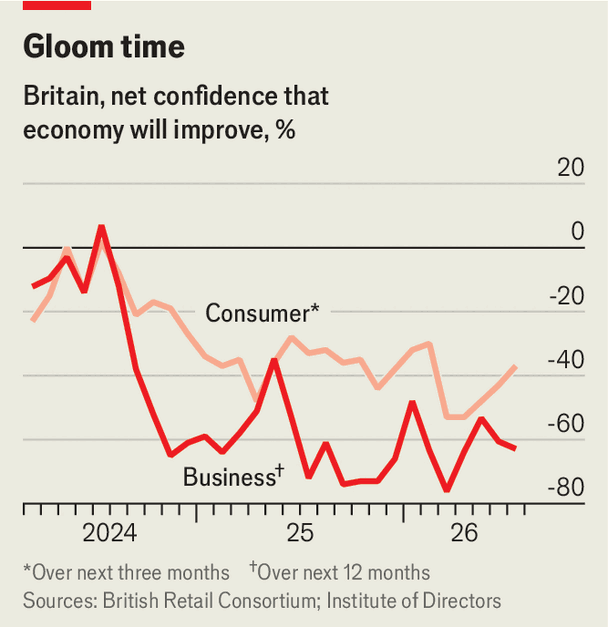
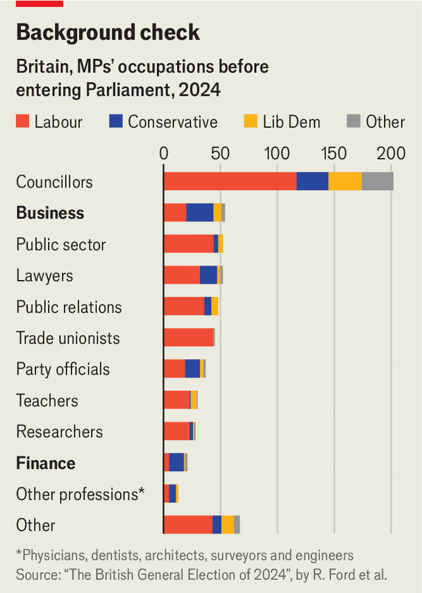

Andy Burnham’s chance to reset Labour’s relations with business
Mark his actions more than his words
Aug 13th 2026
ThE MOST unlikely love affair in British politics recently was between big business and the Labour Party. Before the general election in 2024, the party launched what this newspaper called a “smoked-salmon offensive” to reassure bosses that it had sworn off socialism and would govern with economic growth as its “number-one mission”. It held long, detailed talks with different sectors, asking for ideas on how to boost growth.
The plan worked. Fed up with the feckless Conservatives and charmed by Sir Keir Starmer, the party leader, and Rachel Reeves, his chancellor-to-be, firms swooned over Labour. But it did not last. The salmon sandwiches went first stale, then mouldy. By the time Sir Keir and Ms Reeves left office this July, most business leaders, from FTSE 100 CEOs to scrappy startup founders, were sick of them.
The government stopped listening to business, whacked it with hefty taxes and failed to implement many of the pro-growth reforms it had promised. Engagement with firms, previously undertaken by Ms Reeves herself, was outsourced to civil servants. Ministers at the Treasury and other economic departments continued to hold frequent meetings with bosses, but attendees say these were more “photo opportunities” than substantive discussions.

The party’s boosterish tone quickly became discordant. Weeks after the election, Sir Keir shocked international investors with a speech in the garden of 10 Downing Street in which he moaned that “things will get worse before they get better.” Labour’s first budget imposed big tax rises on businesses, most painfully an increase in the national-insurance contributions paid by employers, a payroll tax. Even those who did not take too much of a direct hit were disturbed by the seesaw decision-making the announcement epitomised.
Business and consumer confidence (see chart) continued to plunge. Promises to cut red tape and reduce the price of energy for businesses came to little, although Sir Keir made a start on reforming planning rules and financial-services regulation.
His departure offers the chance of a fresh start, business leaders hope. Unfortunately for them, the former prime minister and chancellor were not solely to blame for Labour’s shaky relationship with the corporate world. Pro-business feeling is rare within the party: just 6% of its MPs came to the House of Commons from commerce or finance (compared with 31% for Conservative MPs), whereas 11% worked for a trade union and 39% had another political job before entering Parliament (see chart). Not a single member of the new cabinet has had a significant business career. Tory cabinets between 2010 and 2024 were usually stuffed with businesspeople, including the six chancellors who came before Ms Reeves.

Party bigwigs would visit factories and building sites—with big industrial workforces—but seemed less comfortable with the services-based firms likely to drive growth. The pro-business minority within the party complain that colleagues default to a “corporatist” approach redolent of the old economy. A former Labour staffer describes a “spiritual gap” between the party and business. A corporate boss grumbles that “‘unions good, businesses bad’ is an article of faith that a lot of them haven’t thought about.” The lack of understanding goes both ways: business leaders often misunderstand politics.
Mr Burnham’s record as mayor of Greater Manchester suggests he understands the importance of close collaboration with business. Mark Allan, the CEO of LandSec, a property developer, praises his approach of encouraging the private sector to plough money into Manchester city centre while using public funds to invest in the shabbier towns around its edge. The prime minister sees his political identity as “business-friendly old Labour”, an aide says.
His rhetoric is less promising. Mr Burnham fulminates against “neoliberalism” and privatisation, and gives little indication that he understands that the profit motive can drive benefits to society at large. His early interventions have been aimed at lowering the cost of living for households via price caps or tax tweaks, not supply-side reforms to make it cheaper to produce goods and services.
In the two speeches he has made since becoming prime minister he has not mentioned “growth” or “business” (Sir Keir gave a speech on his first full day in Number 10 which mentioned “growth” four times). The prime minister seems to be getting on fine with the leaders of America and the EU, but has had almost nothing to say about trade policy. Miles Celic, head of TheCityUK, an industry lobby group, warns that “Burnham really needs to set out what he stands for in terms of attracting international investment.” The prime minister is in talks to hire Jim O’Neill, a former banker and Conservative minister, to a job in Downing Street, but the Times reports that this may be derailed by a disagreement over wealth taxes.
Business is not a monolith. Startups are frustrated by bureaucracy but blame the civil service rather than ministers. Banks are quietly pleased by their treatment under Labour. Pubs and restaurants are enraged by their tax burden—but optimistic that they will be top of Mr Burnham’s list of companies to placate, given their role in perking up high streets, one of his avowed goals (indeed, pubs have already been promised a lower business-rates bill).
Many are nervous about Mr Burnham’s plans. If he acts on his rhetoric, business is in for a battering. But there are reasons for hope. The handful of Labour officials whom business trusted as a conduit to Number 10 have all been kept on. Jonathan Reynolds, back as business secretary after being shuffled out last year, is respected by those who have dealt with him, as is the AI minister, Kanishka Narayan. Both sit within a souped-up business and trade department which has absorbed the previously separate science and technology brief. Tech firms are unhappy about this change, but putting all the biggest levers of growth under one roof could help countermand the overbearing power of the Treasury.
Sir Keir spoke in ways that business loved, then often enacted policies it hated. Mr Burnham has the chance to do the inverse: talk populist, act centrist.■